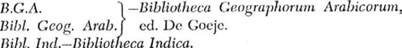
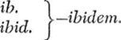

Hazar İmparatorluğu içindeki ırkî ve dinî farklılıkların onun dağılmasına katkıda bulunduğu muhakkak, fakat bu parçalanmanın asıl sebebini tabii sınırları olmayan, kendi başına yetersiz, uzun vadede kalıcı bir siyasi istikrar ve ekonomik birlik sağlamaktan uzak olan bitişik bölgelerin birbirine katılmış olmasında aramak gerekir. Bu topraklar, belli bir süre, garnizonlarıyla şehirler arasındaki bölgeleri süvarilerin kontrol altında tuttuğu sürece muhteşem bir gücü kullanan askeri bir demokrasinin, Mûsevîleş-miş Hazarların hakimiyetinde kalmıştır. Hazarya’nın coğrafi konumu ve siyasi ehemmiyetine gelince, daha önce gördüğümüz gibi, o çağın büyük halklarına bir süre meydan okumuştur. Ama bu durum uzun süre devam etmemiş, askeri hakimiyet düzeni bozulmuş ve daimi birlik bağlarının olmayışı sebebiyle Hazar Devleti çökmüştür. Hazar İmparatorluğu tarafından işgal veya tehdit edilen daha küçük halkların bazılarının günümüze kadar hayatta kalmış olması da bu tezatın bir parçasıdır. Halbuki bir zamanlar “mukayese kabul etmez şekilde”1004 komşularından daha güçlü olan Hazarların adı zar zor hatırlanmaktadır.
1004 Bu sözler, Barthold tarafından Bulgarlara atıfta bulunarak Hazarlar için kullanılmıştır. (E.l. art. Bulghar)
Her şeye rağmen, doğudaki ve batıdaki ulusal devletlerin benzerlikleri özellikle öğretici değildir. Örneğin, Fransa’nın ya da Pers İmparatorluğu’nun tarihi, yükseliş ve çöküş dönemleri boyunca oldukça eskiye doğru düzenli şekilde izlenebilmektedir. Eski Galya ve İran, günümüzün önemli toplulukları arasında hâlâ varlığını sürdüren temsilcilerine sahiptir. Aksine Hazar İmparatorluğu, uluslararası camiada inanılmaz bir hızla yükselen, belli bir süre neredeyse tarihin akışını kontrol altında tutan, fakat aynı hızla çöküp yok olan göçebe imparatorlukları anımsatmaktadır. Örneğin Hun ve Moğol imparatorlukları bu türdendi. İkincisinin, büyük devletleri geniş toprakları içinde yutarak medeni-leşmiş dünyanın çoğunu nasıl altüst ettiğini ayrıntılarıyla bilmekteyiz. Ama sonuçta sular mecrasına dönmüş ve Moğollar, devirmiş oldukları Pers İmparatorluğu ya da bir hanedan verdikleri Çin gibi devletlerden çok daha az önemli hale gelmişlerdir. Hazarların macerası Moğollarınkinden çok daha küçük ölçekliydi. Savaşçı kuvvetlerinin ve kontrol ettikleri bölgelerin sayısı, takriben de olsa, asla bu kadar büyük olmamıştı, fakat yükselişleri takdire şâyândı. Yine de Moğolların veya kendilerinden önce Hunların yok oluşu, X. ve XI. Yüzyıllarında Hazarların yaşadıkları kaderi anlamamıza izin vermektedir.1005
1005 Rus arkeologlar halihazırda çok sayıda Hazar yerleşim alanında veya benzerlerinda kazı yaptılar, ama ne yazık ki detaylı bilgiye ulaşmak zor. Özellikle Donetz üzerindeki Yukarı Saltov’da 1914 yılına kadar on iki yıl boyunca yapılan kazıların bir özeti, Rus edebiyatına atıfta bulunularak Arne (op.cit.) tarafından verilmiştir. Poliak (Khazaria, c. 5), buluntuların bazılarını tartışır. Önemli olması gereken diğer çalışma, Bulgar’da, (Smolin, Po razyal. drev. Bulgara, Kazan 1926; Minorsky, Hudud, 461, n. 2 ile karşılaştırınız,) ve Su-var’da yapılmıştır. İkinci bölgede değerli sonuçların zaten elde edil miş olduğu açıktır. Zeki Velidi (İbn-Fadlaan, 75 n.) X. Yüzyıla ait iki katlı bir sarayın ve birçok paranın bulunduğunu A. P. Smirnov’a atfen bahsetmektedir. Bunlar, yukarıda sözü edilen Hazarların Arap paralarını çoğaltmaları sorusuna ışık tutmalıdır. Sovietskaya Archa-eologiya, ıv (Moscow 1937)’de kısa bir not bulunmaktadır. Günümüzde, Yukarı Saltov’un bir Hazar bölgesi olması konusunda oldukça az bir mutabakat olduğu da eklenebilir (Vernadsky, Anc. Russ., 157, 241, 269’la krş.; N. Fettich, Die Metallkunst der landneh-menden Ungarn, Archaeologia Hungarica, 21 (1937) ve A. Zakhanov ve V. V Arendt, Studia Levedica, aynı seri, 16 (1935)’ten bahseder. VI. Blm, n. 105’le de krş.
IX.
HAZAR DEVLETİ’NİN SONU
Önceki bölümde Hazar Devleti’nin zaafının tahminen nereden kaynaklandığını tartıştıktan sonra, şimdi de onun ayrılıp dağılmasına ve nihai olarak yok oluşuna neden olan olaylar zincirinin izini sürmeyi denememiz gerekiyor. İstahri (320/932), Mesûdî (332/943) ve Hazar Yazışmalarından anladığımız kadarıyla Hazar Devleti X. Yüzyıl ortalarında gelişmekteydi. Cambridge Belgesi’ne güvenilirse, Hazarlar bu dönemde özellikle Bizanslılara karşı dikkate değer askeri başarılar kazanmışlardır.1006 Bununla birlikte Rusların güçlerini birleştirmesiyle Hazar İmparatorluğu’na karşı bariz bir tehlike gelişmeye başlamıştı. Volga’nın [İdil’in] aşağı akımlarına doğru gerçekleştirilen Rus akınlarının ne kadar erken başladığı kesin olarak belirlenememektedir.1007
1006 Yukarıda VI. Blm.’e bkz.
1007 Bal’ami’nin 22/642-643 gibi erken bir tarihte Rusların Kafkasya topraklarında tehlikeli oldukları şeklindeki (ed. Dorn, 500) kaydı III. Blm.’de tartışılmıştır. Rusların ortaya çıkış tarihiyle ilgili benzeri bir kayıt, Yermuk savaşında (15/636) Saklabların Rus kralı Kanatir (ed. of A. H. 1335, ı, 97) komutasında Bizans saflarında savaştıklarını belirten kayda meşhur Futuh eş-Şam (Vakidi’nin 207/823’de yazdığı sanılan, ancak Haçlı Seferleri’nden önce yazılmış olması hayli şüpheli bulunan) adlı eserde rastlanmaktadır. Bu, yalnızca bir fantazi-dir. İsim konusunda Nizami’deki (Blm. I, n. 61) Kantal ile krş.
Erken dönemde Rusların en azından kültürel açıdan Hazarların etkisi altında oldukları görülüyor.1008 Gerek Arap kaynaklarında1009 ve gerekse M.S. 839 (Chacanus) yılında Batı İmparatoru’na gönderilen Bizans elçisine ait Latince bir kayıtta Rus Hakanı’ndan söz edilmektedir.1010 Marquart’ın da ifade ettiği gibi, bu unvan Hazarlardan ödünç alınmış olabilir.1011 Dahası, İbni Fadlan zamanında (m.s. 922) Hazar Kağanının olduğu gibi, Rus kralının da orduyu yöneten, düşmanlarla savaşan ve halka karşı kralı temsil eden bir yüzbaşısı (khal_fah) vardı.1012 Zeki Velidi, Ruslardaki bu memuriyetin Hazar sisteminden alındığından şüphe duymamaktadır.1013 Galiba İbni Fadlan Rus voyvodalarından haberdardı.1014
1008 Bu konu, Artamonov’un Ruslar üzerindeki Hazar etkisinden bahsetmesi üzerine Rusya’da şu yakınlarda tartışılmıştır. (The Times, 12.1.1952’ye bkz).
Her halükârda Ruslar IX. Yüzyıldan itibaren Kiev şehri de dahil olmak üzere batıda Hazar topraklarının bir kısmını işgal edebilecek kadar güçlüydüler. (M.S.. 878?)1015 Artık Rusların İdil’in aşağı akımlarına düzenledikleri seferlerden bahsedildiğini duymaktayız. Ruslar, 251/864 ile 270/884 yılları arasında Taberistan hükümdarı Seyyid Hasan ibni Zeyd zamanında, Hazar Denizi’ne ulaşarak doğu kıyısındaki Abeskun’a başarısız bir saldırı düzen-lediler.1016 297/910 yılında, on altı gemiyle Abeskun’a geldiler ve bu defa bu defa çok sayıda Müslümanı kaçırdılar veya öldürdüler; yerleşim birimlerini ve çevreyi tahrip ederek yağmaladılar.1017
Bu gemilerin Hazar sularındaki varlığı, belki de İdil yolunun açık olduğu günlerde, Hazarya’daki ticari avantajlarla izah edilebilir. Daha önce de belirtildiği gibi, ülkeden geçen Rus gemileri, yüklerinin onda biri oranında vergi ödemek zorundaydı. Eserini yaklaşık 840 yılında yazan İbni Hurdadbeh’in kaydı böyle; ancak, söz konusu ticaret Hazarların batı bölgelerinin Rusların eline geçmesinden çok sonra da devam etmiştir.1018 Abeskun’a sefer düzenleyen gemilerin Hazar Denizi’ne Hazar hükümetinin bilgisi dahilinde ulaştığını farz etmekte haklı olabiliriz.
1018 İstahri-ibn-Hawqal, V. ve VIII. Blm.ler, n. 82 ile krş.
Ancak, durum değişmekteydi. Sözü edilen Abeskun seferlerinin ikincisinden kısa bir süre sonra, bir Rus donanması Hazarlı yetkililerden İdil su yolunu kullanmak için izin istemiş;1019 Hazar sahillerine akın düzenleyeceklerini belirten Ruslar, bu izin mukabilinde ele geçirilen ganimetin yarısını teklif etmişler ve teklifleri kabul edilmiştir.
1019 Mas’udi, yukarıya bakınız.
Gibbon bir yerde şöyle der: “Dünya tarihinde, Hazar sularında sadece iki donanmayı algılayabilirim.”1020 Ona göre bunlardan biri Orta Asya’dan1021 gelerek Amu-derya’ya indiği söylenen Amiral Patrocles komutasındaki Makedon filosu, diğeri ise Moskova’nın komşu bölgesinden Büyük Petro kumandasında Hazar kıyısına gelen Rus filosudur. Şu anda sözünü ettiğimiz Rus silahlı gücü de, büyük ölçekli bir savaş filosuydu. Bu, o dönemde bariz şekilde güçlü sayılabilecek, her biri için 100 kişi taşıyan 500 gemiden müteşekkil bir donanma idi. Sonucun da gösterdiği gibi, Hazarların topraklarını koruyacak kadar güçlü olmalarına rağmen, neden Rus donanmasının ülkenin iç kesimine geçmesine izin verdiklerini bilmiyoruz. Belki de Rus seferi doğrudan Hazar sahilindeki Müslüman yerleşim birimlerine yönelik olduğu için, onlara karşı özel bir sempati beslemeyen Hazarlı yöneticiler, hiçbir şey yapmadan kendi hesaplarına önemli bir kazanç sağlayacak olmaktan ziyadesiyle memnundular. Her halükârda Hazar liderlerinin bu kararı, geçmişte eşi görülmemiş oldukça tehlikeli bir karar olarak düşünülmelidir.
1020 Decline and Fall, c. 46, n. 5.
1021 Günümüzde bu seferin hiç yapılmadığı şeklinde şüpheler de var.
Böylece Ruslar, Hazar sahillerindeki pekçok yerleşim birimine saldırılar düzenlemiş (yaklaşık olarak 913)1022, üç gün boyunca iç kesimde ilerleyerek Azerbaycan sınırları içindeki Erdebil’e kadar gelmişlerdir. Bilâhare neler olduğunun tasvirini VII. Bölümde Mesûdî’nin ağzından dinlemiştik. Gerçi Mesûdî Rusların o olaydan sonra bir daha böyle bir harekete teşebbüs etmediklerini kaydederse de, eserini yazdığı yılda (332/943) kendilerine ve düşmanlarına sadece daha az tahripkâr sonuçlar getiren bir sefer münasebetiyle tekrar Hazar Denizi’ndeydiler. 943 seferi, esasında büyük çaplıydı. Ruslar, Berdaa’yı zaptederek bir yıl boyunca ellerinde tutmuşlardır.1023 Bir nesil ömründen daha uzun bir süre sonra dahi, onların şehir dışındaki kampları hâlâ hatırlanıyordu.1024 Ruslar, bu işteki payları ancak tahmin edilebilen Hazarlardan ziyade, zayıf düşmelerine ve hayatta kalanları gemilere çekilmeye mecbur eden Azerbaycan hakimi Musafirid Merzeban ibni Mu-hammed’e karşı direnmekten âciz bırakan salgın hastalıktan çektiler. Dindar Müslümanlar ise vukû bulan bu olayı yaptıklarının cezası olarak ilahi bir ikab şeklinde değerlendirdiler.1025
1022 Sefer, Rus Igor’un (Minorsky, E. İ., art. Rus) göreve gelmesinden kısa bir süre sonra 301/913’te gerçekleşmiş olabilir. Mesûdî, olayın tarihini verirken “Hicri 300 yılından bir süre sonra demekte, fakat İb-ni İsfendiyar, age., Hicri 298 yılını göstermektedir.
1023 Ibn-al-Athîr, vııı, 134-135; İbni Miskaveyh, II, 62-67, Rusların Ber-daa’ya ulaştıktan sonraki ilerlemeleri konusunda görgü şahitlerine dayanarak oldukça önemli bilgiler vermektedir.
Anlaşıldığı kadarıyla Hazarlarla Ruslar arasındaki ilişkilerin başka bir aşaması, Yosef’in Cevabı’nda gösterilmektedir. Hazarân-Atil’deki yetkililerin bu yabancı savaş filolarına İdil’in aşağı akımına açılan bir geçidi esirgedikleri zaman da olmuştur. Daha önce de bahsedildiği gibi, belgenin muhtasar nüshasında Yosef şöyle der: “[Atil] nehrinin denizle birleştiği geniş ve açık yerde yaşıyorum ve gemilerle gelen Rusların [Araplara] geçmelerine izin vermiyorum, aynı şekilde, kara yoluyla gelen düşmanlarının da onların ülkelerine geçmelerine izin vermiyorum. Onlarla zor bir savaş yapıyorum. Onlara izin versem, Arapların ülkesini Bağdat’a kadar yok ederler.” Aynı konu mufassal nüshada şu şekilde genişletilmiş: “Nehrin ağzında yaşadığımı bilin ve anlayın. Tanrı’nın yardımıyla nehrin ağzını koruyorum ve ne gemilerle denizden gelen Rusların Araplara karşı gitmesine, ne de karadan gelen düşmanların [? Bab el-Ebvab]’a gelmesine izin veriyorum.1026 Onlarla savaşıyorum. Bir saatliğine onlara izin versem, Arapların ülkesini
1026 Lit. “to a gate” (sha’ar). Cevab’ın başka bir yerinde, Sha’ar al-Abwab, (VI. Blm., n. 111) ifadesi kullanılır.
Bağdat’a kadar ve ülkesini yok ederler.” Anlaşılan Hazar
kağanı M.S. 960’larda Rusların İdil’den aşağıya doğru Hazar De-nizi’ne gelmesini engellemeyi önemli görüyordu.
Bu seferlerin Ruslara anlatılacak öyküler ve intikamı alınacak yenilgiler sağladığı kesin. Daha da önemlisi, artık Hazar savunmalarının türü ve gücü hakkında iyi bir fikre sahip olmuş olmalılar. Anlaşıldığı kadarıyla İdil’in aşağı akımına olan alışılmış trafik yine de devam ediyordu.1027 332/943 seferinden sonra Hazarlar kendi paylarına nehri Rus savaş filolarına kapatmaya karar vermiş olabilirler. Sözü edilen politika değişikliği, belki de yirmi yıl kadar sonra Rusların Hazarya’da gerçekleştirdiği son ve en büyük seferinin bir sonucudur.
1027 N. 13 ile krş.
Rus Vakayinamesine göre, Kievli Rusların hükümdarı Svyatos-lav, M.S. 965 yılında hanın (kağanın) hakimiyeti altındaki Hazarları yenilgiye uğratıp Bela Veja [Akkale] kasabasını ele geçirmiş, arkasından Yasları ve Kasogları itaat altına alarak Kiev’e dönmüştür.1028 Bela Veja, “Akkale”1029, genellikle Sarkel’le özdeşleştirilmektedir.1030 Ancak, Marquart, burada adı geçen şehrin, daha önceki Arap kaynaklarında bazen el-Beyda (Beyaz) olarak adlandırılan Hazar başkenti olduğunu görüşündedir.1031 Vakıa Hazar başkentine saldırmak için bir kara kuvvetinden çok bir filonun düşünülmesi daha doğaldır. 965 yılında Svyatoslav tarafından kullanılan gemiler konusuna Vakayinamede değinilmiyor. O sıralarda Hazarân-Atil’in artık Rusların eline geçmiş olduğu konusunda bağımsız bir işaret mevcut.1032 Doğal olarak, böyle önemli bir konuda Vakayına-mede bir takım bilgilerin olmasını beklerdik. Sarkel’in böyle olmuş olduğunu varsayarak, bir Don kalesinin zaptının niçin kaydedilmesi ve diğer bir olayın çıkarılması gerektiğini anlamak zor. Bu nedenle, Marquart’ın görüşü kuvvetli bir ihtimalle doğrudur.
1028 Chronicle, c. 32.
Hazaran-Atil’in yerle bir edildiği muhakkak. İbni Havkal, bu konuda İstahri’ye ilaveten 358/968-969 tarihlerini vererek, buranın Ruslar tarafından tahrip edildiğini birden fazla yerde belirtir. İdil boyundaki Bulgar ilçesi hakkında şöyle der: “Burası, bu ülkelerin (kuzey bölgelerinin) ticaret merkezi olarak şöhret yapmıştı. Ruslar, Hazaran, Semender ve Atil’i tamamen yok ettikten sonra Hicri 358’de burayı yağmaladılar.”1033 Kürk ticaretinden bahsederken de şöyle der: “Hicri 358 yılına kadar böyleydi; çünkü Ruslar [bu yıl] Bulgar ve Hazaran’ı yok ettiler.”1034 İbni Havkal’a ait üçüncü bir metin, Rusların saldırısı ile ilgili bilgisinin kaynağını gösterir: “Semender’de pek çok bağ vardı ve vaktiyle burada 40,000 asma olduğu söylenmektedir.1035 Bunu 358 yılında Curcan’da, son zamanlarda orada bulunmuş olan bir adama sordum. Adam şöyle dedi: Eğer orada üzüm bağı yahut bostan varsa, yahut Tanrı orada dal üstünde yaprak yaratmışsa, bütün malım yoksullara sadaka olsun. Çünkü Ruslar buraya geldiler ve burada ne yaş üzüm kaldı, ne de kurusu. Semender kasabasında Müslümanlar ve başkaları otururlardı. Burada Müslümanların mescitleri, Hristiyanla-rın kiliseleri ve Yahudilerin havraları vardı; ancak, buradan göç ettiler. Topraklarının verimliliği ve mahsulatın bolluğu nedeniyle, tekrar eski haline gelmesi üç yıl sürmez.”1036 Barthold bu pasajdan 968 yılının Svyatoslav’ın düzenlediği seferi değil, İbni Havkal’ın Curcan’ı ziyaret tarihini gösterdiği kanaatine varmaktadır.1037 Hazarya’nın tahrip edilmesinin aynı yılın daha erken bir döneminde vukû bulduğu izlinimini İbni Havkal’ın oluşturmuş olduğunu var saysak bile, tarihler arasındaki uyuşmazlık konusunda mutlaka bir açıklama yapmak gerekiyor.
1033 Ed. Kramers, 15.
Zeki Velidi, bu pasajda Rus Vakayinamesinde belirtilen1038 Rus istilasının 965 yılında gerçekleştiği konusunda bir kanıt aramaya teşebbüs etmekte ve bu durum onu İbni Havkal’ın ya da ona bilgi veren kişinin sözlerini çarpık bir şekilde tercümeye zorlamaktadır: “Topraklarının verimliliği sayesinde ... o eski haline gelene kadar varı yoğu üç yıl geçti.” Bu, asla kabul edilemez1039 ve sanırım gereksizdir. Marquart, Rus Vakayinamesinde Bela Veja’nın zapt edilmesinden sonra Svyatoslav tarafından itaat altına alındığı belirtilen Yas ve Kasogların her halükârda Kafkasya’da ya da civarında yaşayan ve muhtemelen Hazarlara tabi olan1040 Kafkasyalı Alanlar (As) ve Keşekler (Kaşak/Kazak) olduğunu göstermiştir. Bu nedenle, Vakayiname’nin yalnızca Svyatoslav’ın seferini doğru tarihe, m.s. 965’de yerleştirmekle kalmadığı, aynı zamanda askeri harekatın tüm kapsamını da açıkladığı sonucunu çıkarmalıyız.1041 Bu arada, eğer Kossakların Kasoglar olduğu ispat edilebilirse, o zaman bu, Hazarlar ile Kossakları1042 ilişkilendiren eski teorinin belli bir kanıtı olarak kullanılabilir.
1038 İbn-Fadlaan, 319, n.
1039 Metin: fa-lan tamdiya thalath sinin.
1040 Streifz., 2, 479. Marquart, Kashak ve K_sak_yah (Tanblh, 184); Ka-sakhia (Con. Por. De Admin. İmp., c. 42); Reply of Joseph, S.V B_sa, L.V. K_sa’da düzeltilmiştir; vb ni dile getirir. Hudüd’a, §48, göre, K_sak, Alanya’daydı. Kas_k formu şurada da ortaya çıkmaktadır; IV. Blm., n. 104’le kıyaslayınız. V.’ye bakınız. Minorsky, “Transcaucasi-
ca”, J.A., t. 217 (1930), 73-90.
1041 Grâtz’in (Geschichte, v, 307) Svyatoslav’ın Hazar Devleti’ni 965 yılında (Sarkel) ve yine 968 yılında (Atil ve Semender) akın yapmasına ilişkin varsayımı kaynaklara dayanmamaktadır. Daha aşağısı ile krş.
1042 Örn., Fr. Bodenstedt’in Völker des Kaukasus, Frankfurt-am-Main 1848, 238ff. Gr0nbech’in bir eleştirisi olan Komanisches Wörter-buch’taki en yeni O. Pritsak, Der İslam, B. 30 (1952), 113 ile kıyaslayınız.
Marquart daha sonra Svyatoslav’ın Vakayiname’de bahsedilen seferinin sadece Sarkel’e kadar uzandığı görüşüne geri dönmüştür. İbni Havkal’ın sözünü ettiği Hazarya’nın tahribi olayının esasen 968’de vukû bulduğu; ancak, bundan sorumlu olanların Svya-toslav’a tabi olan Kievli Ruslar olmadığı, bu nedenle de Rus Vaka-yınamesinde bundan bahsedilmediği onun daha sonraki duruşuydu.1043 Bunun yanında, Sarkel’in Hazarlardan 965 yılında zaptedil-mesi ve Hazarya’nın 968’de başka düşmanlar tarafından tahribi sebebiyle Vakayiname’de herhangi bir kayıt bulunmaması da mümkün. Ancak, genellikle diğer çözüm ön plana çıkmaktadır. Marqu-art’ın analizinin de gösterdiği gibi, Vakayiname’deki 965 yılı olayıyla ilgili kayıt, seferin Don kalesinin bulunduğu alandan daha geniş bir bölgeyi içine aldığını göstermekte ve Rusların Hazar-ya’nın Kuzey Kafkasya bölümündeki topraklarında elde ettikleri zaferlere işaret etmektedir ki, İbni Havkal’ın metninden anlamamız gereken de budur. Bu yıllarda Hazar Devleti’nin baştan aşağı birden fazla tahribi söz konusu değildir. İbni Havkal’a rağmen, Hazarya’nın fethi için gösterdiğimiz tarihin (965) doğruluğu, Arap kaynaklarındaki başka bir metinle de desteklenmektedir.
1043 Streifz., 474.
İbni Miskaveyh (ö. 421/1030), 354/965 yılında çok sayıda Türkün Hazar Devleti’ne saldırdığını ve bunun üzerine Hazarların Harezm halkından yardım istediğini; ancak Harezmlilerin Mûsevî oldukları için onlara yardımda bulunmayı reddettiklerini, Müslüman olmaları halinde yardıma geleceklerini söylediklerini kaydetmektedir. Hazarlar bu teklif kabul ederler ve kralları hariç tamamı Müslüman olur.1044 Burada geçen “Harezm halkı” konusunda değişik görüşler ileri sürülmüştür. Marquart1045, Harezmliler ifadesiyle aslen buralı olan Arsiyaların kastedildiği,1046 Zeki Ve-lidi ise doğrudan Harezmlilerin göz önünde tutulduğu görüşün-dedir.1047 Ancak, metinde geçen “Türklerin” Ruslar olduğu konusunda genel bir mutabakat söz konusudur ve Barthold gibi dikkatli bir yazar dahi burada Svyatoslav’ın büyük seferinin kastedildiği düşüncesindedir.1048 İbni Miskaveyh’in bu kaydı, daha sonra Hazar kralının Müslüman olduğunu1049 ilave eden İbn’ül Esir (ö. 630/1234) tarafından kullanılmıştır. Bunu, Rusların Hazar Devle-ti’ni istila tarihinin 965 yılı olduğu konusunda bağımsız bir delil olarak rahatlıkla kullanabiliriz.1050
1044 Ed. Amedroz, ıı, 209. Barthold (E.İ., art. Khazar)’a göre, uyarı Sabit ibni Sinan’dan gelmektedir. İkincisi, 365/975 yılında ölmüştür (Brockelmann, G.A.L., ı, 324).
1045 Streifz., 4.
1046 Tam anlamıyla Mesûdî’ye göre “Harezm bölgesinden”, VII. Blm.’e bakınız.
1047 İbn-Fadlaan, 320, xvii ile krş.
1048 E.İ., art. Khazar.
1049 vııı, 196. Aynı kayıt (yanlışlıkla A.H. 254 tarihiyle) Dimaşki (ö. 727/1327), ed. Mehren, 263’de de görülüyor.
1050 Vasiliev de (Goths, 120 ff) İbni Havkal’ın Hazaran-Atil ve çevresinin tahribiyle ilgili olarak verdiği 968 tarihini kabul etmekte, ancak Svyatoslav’ın Bela Veja (Sarkel) üzerine tertiplediği sefer tarihi için 963’ü vermektedir. Westberg’den sonra Vasiliev de bu konuda kehanet türünden Ocak 963 tarihini veren Fragments of the Got-hic Toparch’ı (Blm. VI, n. 144) esas almaktadır. Te’vile göre, Hazarlar 962 yılında (X.Yüzyılda Peçeneklerin güçlenmesi, Bizanslıların da onlara destek vermesi sebebiyle son bulan, Vasilev, ib. 116)) hakimiyetlerini yeniden diklemek için çok sayıda atlı ve piyadeyle Kırım’a saldırmış, 10 şehri ve 500’den fazla köyü harap etmişlerdir. 962 yılının kış mevsiminde, Got hükümdarı, Svyatoslav ve Ruslardan yardım almak amacıyla Kiev’e doğru yola koyulmuş ve bahsedilen tarih olan Ocak 963’te geri dönmüştür (aynı yerde 130). (Kiev’deki Svyatoslav’a yapıldığı iddia edilen bu ziyaret, oldukça riskli bir öneridir ve sadece bir tahmin gibi görünmektedir.) Sonuç olarak, Svyatoslav, bir sonraki mevsimde (963), Vakayinamenin belirttiği gibi, ancak 965 yılının ikinci yarısında Bela Veja’yı zaptettikten ve Yas ve Kasogları itaat altına aldıktan sonra Hazarların üzerine yürümüştür. Daha sonra, 960’larda Ruslar Hazar Devleti’ni “yerle bir etmiş”lerdir (aynı yerde 134). - Eğer Hazarlar Kırım’a gerçekten 962’de saldırmışlarsa, Cambridge Belgesi’nde belirtildiği gibi, eğer doğruysa, daha önce bir tarihte gösterilmesi gereken aynı olay olamaz. - L. Schmidt, Geschichte der deutschen Stâmme bis zum Aus-gang der Völkerwanderung, Munich 1934, 400 (Vasiliev, aynı yerde, 129 n. da bahsedilen), Hazarların Got kralının Mankub’u kendisine başkent yapmasından sonra Doros’u 962 yılında tahrip ettiklerini düşünmektedir.
İbni Miskaveyh’in kaydına ihtiyatla yaklaşmak gerekir; ancak Barthold’un bunu gayr-ı tarihi olarak nitelemesi pek haklı gibi görünmüyor. Şartların zorlaması karşısında bir Hazar hükümdarının geçici olarak Müslümanlığı kabul ettiğini gördük.1051 Buna benzer bir şeyin Rus istilasını püskürtmek için Müslüman yardımının gerekli olduğunda meydana gelmesi en azından olanaksız değildir. Bu tarihten sonra Hazarlar hep Müslüman olarak gösterilmektedir. Mukaddesi Hazar kasabasından - Hazaran olsa gerek1052- bahsederken bir yerde ahalinin orayı terkederek sahil kesimine gittiğini ve halihazırda (Mukaddesi’nin eserini yazdığı tarihte, takriben 375/985) dönmediğini, ancak onların artık Yahudi değil Müslüman olduklarını kaydetmektedir. Mukaddesi’nin Rus istilasını duyduğu; ancak, Hazaran’ın tahliyesini muhtemelen bu olaya bağlamadığı göz önünde tutulmalıdır. Kendisine “tüm zamanların en büyük coğrafyacısı”1053 pâyesi verilmesi, muhtemelen pek de içine sinmemiş olarak yazdığı Hazarya notlarıyla fazla te’lif edilemez ise de,1054 Mukaddesi’nin bu tahliye ve geri dönüşle ilgili kaydı kabul edilmelidir. Bu olay, gayr-ı muteber bir kaynağı kullanan İbni Havkal tarafından da doğrulanmakta ve nisbeten detaylı olarak anlatılmaktadır. İbni Havkal,1055 Atil’deki Hazarların Ruslardan kaçtıktan sonra, bazılarının Hazar Denizi’nin doğu kıyısındaki Si-yâh-kûh adasına gittiğini, diğerlerininse güneye doğru, 301/913 yılında Rusların o dönemde hüküm süren Şirvanşah’a karşı kendilerini başarıyla korudukları “Nafta kıyısı”nın1056 açıklarındaki adalardan birine çekildiklerini belirtmektedir.1057 9 65 Rus saldırısının ardından, hayatta kalan Hazar beyleri, daha sonraki bir Şirvanşah ile irtibat kurmuş ve onun yardımını elde etmiş gibi görünmektedir. Nitekim İbni Havkal şöyle devam ediyor:1058 “Şu anda [yani tahminen 376/977 yılına doğru], Bulgarlara, Burtaslara ve Hazarlara, zaten yağmaladıkları birkaç harabe dışında Ruslar tarafından hiçbir şey bırakılmamıştır. Her şeyin üstüne üşüştüler ve hayal ettiklerinden fazlasına komşularında buldular. Duyduğuma göre [Hazarların] çoğu, ordusu ve halkı ile kendilerine yardımcı olan Şirvanşah Muhammed ibni Ahmed el-Ezdi’nin desteğiyle Atil ve Hazaran’a geri dönmüş. Onlar, [yani Hazarlar], onlarla [? Ruslar]1059 bir anlaşma yapmayı ve kıtanın kendileri tahsis edilecek bir yerinde onların hakimiyeti altında olmayı bekliyor ve ümit ediyorlar.” Hazarlar bu kadar kötü durumdalarsa, Şirvan-şah’ın onlara yardım vermek için Müslümanlığı kabul etmeleri şartını ileri sürmesi ihtimalden hâli değildir.
1051 Yukarıda IV. Blm.’e bkz.
1052 Muqaddasi, 361; De Goeje ile aynı yerde krş.
1053 Barthold, Turkestan (G.M.S.), 11.
1054 Mukaddesi, “gecelerin kısa geçtiği” Bulgar’ın (V Blm.’de İstahri’nin kaydıyla krş.) Hazar başkentinden çok Hazar Denizi’ne daha yakın olduğunu belirtiyor; Zeki Velidi de Bulgarların nehrin yukarı akı-mındaki kasabalarının tahrip edilmesinden sonra Aşağı İdil boyunda kurulan yeni Bulgar yerleşim birimini göstererek bu bilgiyi savunmaya teşebbüs ediyor. Ne var ki Mukaddesi’nin Hazaran-Atil hakkında açık bir görüşü yok ve muhtemelen Bulgar bölgesi konusunda kafası karışık.
1055 Ed. De Goeje, 282.
Mukaddesi’nin Me’mun’un Gurgenc (Curcaniye)den Hazarlara saldırdığını ve onları fethederek Müslümanlığa davet ettiğini işittiği şeklindeki kaydı da1060 Hazarların Harezmle birlikte Müslüman olarak zikredildiği ve olayın aynı sırada meydana geldiği konusunda başka bir referanstır. Bu kaydın tarihî bir kayıt olduğunu yine reddeden1061 Barthold’a göre, burada sözü edilen kişi halife Me’mun değil, Gurgenc’in ve 995’den sonra tüm Harezm’in hakimi Me’mun ibni Muhammed’dir.1062 Bu dönemde, Hazar kasabalarının Gurgenc hakimi tarafından ardı ardına işgal edildiğini belirten Mukaddesi, başka bir yerde bu dönemde Harezm ile Hazar tarihi arasında bir bağ olduğunu kaydetmektedir.1063
1060 Ed. De Goeje, 361.
1061 E.İ., art. Khazar.
1062 Abbasi halifesi Me’mun’un böyle bir faaliyeti olduğundan hiçbir yerde söz edilmez. Marquart bu olaya halife Me’mun’un saltanat döneminde bir yer bulmak için hayli uğraşır. Diğer yandan Mukadde-si’nin henüz on yıl önce Harezmşah unvanı alan Me’mun ibni Mu-hammed’den başka biriyle karıştırılması ihtimalini göz önünde bulundurmadan yalnızca Me’mun şeklinde söz etmesi de ayrıca şaşırtıcıdır. (Minorsky, Hudud, 174 ile krş).
1063 Ed. De Goeje, 371 n.
Şirvanşah Muhammed ibni Ahmed el-Ezdi istisna bir şahsiyet olmasına rağmen1064, İbni Havkal’ın Hazarların Şirvan’dan gelen yardım sayesinde geri getirildikleri konusundaki detaylı hikayesinden şüphe duymak için hiçbir sebep yok. Şirvanşah ile Hazarları yine temas halinde göreceğiz. İbni İsfendiyar’ın da Hazar hükümdarını yanlışlıkla “şirvanşah” olarak göstermesi muhtemelen tesadüfi değildir.1065 Şartlar hakkında bilgi sahibi olmadığımız için, Mukaddesi’nin bilâhere bir şekilde Harezm ile olan bağlantıdan söz etmesi de göz önünde bulundurulmalıdır. Yine de Rus istilasından sonra Hazarların bu Müslüman devletlerle olan ilişkisi bir spekülasyon konusu olarak kalmalı. Ancak, 965 yılından sonra İdil boyunda bağımsız bir Mûsevî devletinden artık rahatlıkla bahsedemeyeceğimiz kesin. İbni Rusta, İbni Fadlan, Mesûdî, İs-tahri ve İbni Havkal’da tasvir edilen Hazarya tablosu hayli farklılıklar içermektedir, ama diğer kaynaklarca da teyit edilen çifte krallık, devletin başında göstermelik olarak bulunan kişinin tecrit edilişi ve Mûsevîliğin kabulü gibi ana çizgiler aynı. Daha sonrasında ise ne Müslüman yazarlar bu tür kayıtlar düşerler, ne de başka kaynaklar Hazarlardaki karakteristik kurumların muhafaza edildiği konusunda olumlu bir söz söylerler. Rus istilasından sonra geleneksel biçimiyle Hazar Krallığı’ndan hemen hemen eser kalmamıştır. Diğer taraftan, kaynaklarımızın üstünkörü değindiği gibi, artık meclislerinde kesinlikle yeni etkilerin ön plana çıkmasına rağmen, geri dönen Hazarlar arasında İslamiyetin genel kabul görmesi muhtemel gözükmüyor. Bunlar neredeyse hiç Rus değildi. Barthold’un söylediğine göre1066, Svyatoslav, oradaki zaferinin ardından1067 Tuna Bulgarlarına karşı Bizanslılarla kuvet-lerini birleştirmek amacıyla Hazar ülkesini terk etmiş gibi görünmektedir.1068 Barthold, bu olayı Rus tarihinin önemli bir vakıası olarak görmektedir. Ona göre, Ruslar İdil boyunda kalsalardı, kesinlikle İslam kültürünü benimseyeceklerdi.
1064 Barthold, E.İ., art. Shirwanshah. Minorsky, Hudud, 406 ile krş. “Sahib Shirwân Shah” unvanı (Ibn Hawqal, ed. De Goeje, 250, 254) muhakkak vitium ab auctore commissum (De Goeje) değildir. Buradaki Shirwan Shah daha ziyade bir yer adı olabilir. VII. Blm., n. 253 ile krş.
1065 Loc. cit.
İbni Havkal ve Mukaddesi’den Hazar başkentinin yeniden imarı konusunda bir teşebbüs olduğunu1069 anlıyoruz, ama Birunî zamanında (ö. 440/1048) Atil harabe halde olduğuna göre,1070 bu teşebbüs başaralı olamamış. Herhalde Saksın kasabası Atil’in yerini almıştı. Saksın, muhtemelen Hazaran-Atil ile özdeştir veya en azından onun yakınındadır ve isim de yeniden canlandırılan eski Sarığşın’ın adıdır.1071 Saksın’ın Biruni’nin zamanında bile var olduğundan emin değiliz. Kendisi bundan bahsetmez.1072 Ebû Ha-mid el-Endülisî’nin (yaklaşık olarak 1150) Bulgar’a kırk günlük mesafedeki Harezm’i anlattığı XII. Yüzyılda burasının güllük gü-lüstanlık olduğu anlaşılıyor ki, Kazvini de bundan bahseder.1073 Ahmad et-Tasi, Saksın’ın Türkistan’da genişlikte emsali olmayan bir kasaba olduğunu hikaye etmektedir.1074 Bu kasabanın adı Moğol istilası sırasında sık sık geçerse de1075 muhtemelen tabii sebeplerle hızlı bir şekilde tarihten silinmiştir.1076 Cengiz Han’ın torunu Batu, Saray şehrini, daha doğrusu Saray-ı Batu’yu onun harabeleri üzerine kurdurmuştur.1077 Saksın, aslen Hazarlar tarafından yaptırılmış ve adlandırılmış olabilir. (İkinci derecedeki Kazvini dışında) bu şehirden bahseden hiçbir kaynakta Hazarların onu elde tuttukları veya Mûsevî bir nüfusa sahip olduğunun belirtilme-mesi1078 sebebiyle, bunu sadece önemli bir veri olarak görebiliriz.
1069 Zeki Validi, İbn-Fadlaan, 206 ile krş.
1070 Yukarıda bahsedilmektedir.
1071 Minorsky, 453, n. 5’de Westberg’e istinaden böyle söylüyor. Poliak (“Conversion”, § 2), Saksın’ın bugünkü Stalingrad (Tsaritsyn) civarında olduğunu ispat etmeye çalışmakta ve onun 965’den önce önemli bir şehir olduğunu farzetmektedir. Belki de Don-İdil arasındaki münakaleyi kontrol eden önemli bir Hazar şehriydi (Vernadsky, Ancient, 215’e göre Hamlic) ama kaynaklarda bundan açıkça söz eden bir kayıt yok. Saksın’ın 965’den önce var olduğunu düşünen Poliak’ın dayanağı, bu eserlerde geçen meşhur Meşek’i Saksın’la bir şekilde özdeş-leştiren Harkavy’i ((Skazanya yevreiskikh pisatelye o Khazarakh, St. Petersburg 1874, 57, 73, 75’te) takip ederek, şehrin adının Josippon ve Book of Jashar’da zikredilmiş olmasıdır. Ancak bu oldukça şüpheli bir durumdur. Daha sonraki bir döneme ait olduğu sanılan özdeşleştirmeye göre Meşek=Saksın’dır. (VII. Blm, n. 272 ile krş).
1072 Zeki Validi, İbn-Fadl_n, 206.
1073 Ed. Ferrand, 87, 117. n. 73 ile kıyaslayınız. Saksın’ı “40 Oğuz kabilesi” tarafından işgal edilen “büyük ve kalabalık bir Hazar şehri” olarak gösteren Kazvini’de de (ed. Wüstenfeld, ıı, 402) benzer bir kayıt vardır.
1074 Zeki Validi, İbn-Fadlaan, 205. Ahmad Tusi, XII. Yüzyılda yaşamıştır.
1075 Cuveyni (ı, 31), Cengiz Han’ın en büyük oğlu olan Cuçi’nin ulusunun Kayalıg (? Balkhash Gölü yakınında, Minorsky, Hud_d, 277 ile kıyaslayınız) ve Harezm’den başlayarak Saksın ve Bulgar’ın en uç noktasına kadar uzandığını belirtir. Reşidüddin ise (ed. Blochet, 18) Ögeday’ın Cengiz Han’ın yerine geçtiğinde Harezmşah’a karşı 30 bin süvari gönderdiğini, bilâhare Kokotay ve Subetay Bahadur’u benzeri bir kuvvetle Kıpçak, Saksın ve Bulgar üzerine yolladığını kaydetmektedir. Keza Cuçi’nin oğlu Batu-han kendi ulusu olan Saksın ve Bulgar’dan (Cuveyni, ı, 205) Moğol kurultayına gelmeyi reddetmiştir ...
1076 Bakuvi’de böyle (Brockelmann, ıı, 213); Westberg’in kaydı (Beitrâ-
ge, 290).
1077 Zeki Velidi’nin İbn Fadlan, 204, no. 1’de, muhtemelen Cuveyni’den alıntı yapan Vassaf’da böyle.
1078 Ebû Hamid el-Endülüsî (Ferrand, 116), kendi zamanında Saksın’da Müslüman alimler, camiler, pazarlar ve saraylar bulunduğunu belirtir. Saksın’dan getirilen esirler Türklerin (Kıpçak veya Guzların) elindeydi. Tarih, yaklaşık olarak 545/1150 olmalı.
Genellikle Hazar Devleti’nin yıkımına Rus istilasının sebep olduğu söylenir. Örneğin Ebu’l Fidâ (1273-1331), tahminen 965 yılındaki büyük felakete atıfta bulunarak, “Hazar Devleti’nden ve Ruslar tarafından1079 yıkılan Hazarlardan” bahseder. Modern zamanlarda, birkaç isim saymak gerekirse, Kunik1080, Howorth1081 ve Marquart da1082 aynı görüştedir.1083 Biraz önce hayatta kalan Hazarların ülkelerine geri döndükleri konusunda gösterilen kanıt, bu devletin X. Yüzyılda bağımsız varlığının sona erdiğini belirten ortodoks görüşle tenakuz teşkil etmez. Bununla birlikte, en azından Rasmussen’den1084 sonra bazıları Hazar Devleti’nin nihai olarak XIII. Yüzyıldaki Moğol istilası sırasında ortadan kalktığı görüşünde iseler de, henüz yakın bir zamanda Poliak bu görüşe şiddetle karşı çıkmıştır.1085
1079 Ed. Reinaud and De Slane, 203.
1080 Bakri, ed. Kunik and Rosen, St. Petersburg 1878, 73-74 (Westberg, İbrahim ibn-Ya’qüb, 79’da bahsedilir). Kunik, daha sonra, Hazar Devleti’nin varlığına devam ettiği görüşünü benimsemiştir (West-berg, Beitrâge,292 ile kıyaslayınız).
1081 “The Khazars, were they Ugrians or Turks?” 3rd İnt. Congress of Ori-entalists (1879), ıı, 138.
Daha öteye gitmeden önce, genel bir gözlem yapabiliriz. Rusların Hazar Devleti’ni X. Yüzyılda ortadan kaldırdığıyla ilgili tüm kayıtların son kaynağı hiç şüphesiz konu hakkındaki sözlerini biraz önce naklettiğimiz İbni Havkal’dır. Ancak, İbni Havkal, Orta İdil’de Bulgar’ın ortadan kaldırıldığından kesin bir dille söz eder. XIII. Yüzyılda Moğol saldırıları sırasında Bulgarların gelişmiş bir topluluk olduğu muhakkak. Acaba Hazarya’nın harabaye dönüşü de geçici bir olay mıydı?1086
1086 Poliak, “Conversion”, §1 ile krş.
* Konuyla ilgili ve önemli olduğu için Gumilev’in “Eski Ruslar ve Büyük Bozkır Halkları” adlı eserinin I. cildinden bu metni aynen aktarıyoruz: “ ... Hazar Yahudileri gelip dediler: “Duyduk ki, Bolgarlar ve Hristiyanlar size gelmişler. Her biri kendi dinini öğretmek niyetin-deymiş. Hristiyanlar, bizim çarmıha gerdiğimiz kişiye inanıyorlar. Biz ise Avraam’ın (İbrahim’in), İshak’ın ve Yakub’un tek Tanrısına inanıyoruz.” Vladimir sordu: “Sizin şeriatınızda ne var?” Onlar cevap verdiler: “Sünnet olmak, domuz ve tavşan eti yememek, Cumartesi gününü mübarek gün kabul etmek.” O yine sordu: “Sizin ülkeniz nerededir?” Onlar cevap verdiler: “Kudüs’de”. O tekrar sordu: “Onun orada olduğu kesin mi?” Ve cevap verdiler: “Tanrı bizim ata larımıza öfkelendi ve günahlarımızdan ötürü bizi çeşitli ülkelere dağıttı. Topraklarımızı ise Hristiyanlara verdi.” Bunun üzerine Vladi-mir dedi: “Farklı bir dinden bahsediyorsunuz, ama kendiniz Tanrı tarafından tardedilmiş ve dört bir yana dağıtılmışsınız. Eğer Tanrı sizi ve şeriatınızı sevseydi, başkalarının ülkelerine dağıtılmazdınız. Bizim başımıza da aynı şey mi gelsin istiyorsunuz?” (ed.)
Rus Vakayınamesi, muhtemelen Kiev’de, M.S. 986 yılında Hazar Yahudilerinin Vladimir’in huzuruna çıkarak Mûsevîliğe davet ettiklerini belirtmektedir.* Vakayıname’de verilen uzun izahatagöre Rus hükümdarı kendi dinlerinin en iyisi olduğunu ileri süren Latinleri, Bizanslıları ve Müslümanları da dinler.1087 Bazı araştırmacılar bu kısmın Vakayıname’ye ilave edildiği kanaatindedir.1088 Yine de bu dönemde Hazar Mûsevîlerinin Kiev’de bulundukları inkar edilemez bir vakıadır ve Vladimir’in vaftiz olmadan önce dinler hakkında bir takım araştırmalar yapmış olması en azından bir ihtimaldir. Grâtz, olayın gerçek olduğunu iddia etmiştir. Ona göre 965’de Hazarya’ya düzenlenen saldırıdan sonra, hayatta kalan Yahudiler Bosporus’u (Kerç) başkent yaparak bir hakanın yönetiminde tekrar organize olurlar ve onların misyonerleri Kırım’dan Ruslara gelirler.1089
1087 Chronicle, c. 40.
Grâtz, bu tespiti için “Rusların ve M-sh-k prensinin adamlarının” Dünyanın Yaratılışının 4746 = M.S. 986. senesinde Kiev şehrinden Rus Vakayınamesine göre Hazar Mûsevîlerinin Vladimir’in huzuruna varışıyla aynı yılda dinî konularla ilgili araştırma yapmak amacıyla Tamatarha (Taman)’da oturan “Hazar Prensi, Efendimiz David”e gelişinden bahseden bir belgeye dayanmaktadır. Bu tarihler arasındaki ilişki dikkate değer. Firkoviç’in eline geçen ve oldukça ses getirdiği söylenebilecek bu belgenin buna uygun olarak düzenlendiği şüphesinden kaçınmak zor.1090 Grâtz’in deyişiyle Hakan David ve Kırım’daki Hazar Devleti’nden bahseden başka bir kanıt yok. Ancak, şüphelerimiz yersiz ise, “Efendimiz David” olarak anılan kişi, muhtemelen Hazarların hakimiyetinden ancak 988’de çıkan ve Rus Vakayınamesine göre Mstislav’ın yönetimine verilen Tamatarha’daki Hazar reisi (hakan olması çok zor)1091 olmuş olabilir.1092Hazarya ve Hazarlardan daha sonraları da bahsedilir. XI. Yüzyılın güvenilir bir tarihçisi olan Cedrenus’a göre, M.S. 1016 yılında, Bizans imparatoru Hazarya’ya Ruslarla müttefiken bir ordu sevketmiş ve ilk karşılaşmada hükümdar Georgius Tzul’u yenilgiye uğratarak ülkeyi hızlı bir şekilde boyunduruk altına almıştır.1093 Bir Hazar’ın Hristiyanlara ait olan Georgius adını taşıyor olması şaşırtıcı değildir. Çünkü çok daha önceleri (VIII. Yüzyıl), George1094 adında bir tarkan vardı ve belirtildiği gibi Hazarlar arasında Hristiyanlık oldukça yaygındı. Tzul ismi, Derbent Geçidi zaman zaman bu şekilde adlandırıldığı için, muhtemelen Tzur ya da Şul bağlantılıdır.
1090 J.E., art. Jacob b. Reuben ile krş (İddia edilen yazar Kerçli Abraham ben-Simha, Firkoviç tarafından uydurulan bir şahsiyettir). Diğer taraftan Grâtz şöyle der: “Jedes Wort dieser Urkunde trâgt den Stem-pel der Echtheit an sich” (aynı yerde, v, 476).
Bu seferin nereye düzenlendiği sorusu biraz önemlidir. Grâtz, biraz önce sözünü ettiğimiz belgede işaret edilen Kırım Hazar Dev-leti’ne karşı düzenlendiği ve kağanın yönetimine son verildiği gö-rüşündedir.1095 Kimilerine göre, 1016’daki ortak Rus-Bizans seferi Azak Denizi kıyılarına kadar ulaşmıştır.1096 Kutschera, Kafkasya bölgesinin belirtildiği konusunda şüphe duymamıştır. Bu, belki de Cedrenus’un Georgius Tzul’un yenilgisinden sonra, “Yukarı Me-dia” hükümdarının teslim olduğunu önermek zorunda kalmasıyla ilgili beyanatı tarafından doğrulanabilir. Kutschera, metnimize gö-re1097 adı “Sennaherib” olan ikincisinin Kafkasya’da bir yerde hükümdarlık eden bir Hazar olduğunu varsayar. Her halükârda bir Mûsevî için pek de kullanmayacağı bir ismi hayalinde canlandırmak zordur.1098 Belki de genellikle, Bizanslıların ve Rusların Hazar Devleti’ne karşı düzenledikleri seferin ana hedefinin Kafkasya olduğunu düşünmekte haklı çıkartılıyoruz. Mstislav’ın oraya yerleştiği 988’den sonra Tamatarha’da durum belirsizdir.1099
Rus Vakayınamesinde Hazarlardan Mstislav’ın kardeşi Yaros-lav’a karşı Hazarlar1100 ve Kasoglardan1101 müteşekkil bir kuvvetle yürüdüğü 1023 seferi münasebetiyle söz edilmektedir ki, muhtemelen Tamatarhalı Hazarlar kastedilmiştir.
İbn’ül Esir’de de 1030 yılında Kürd Fadlun’un Hazarların üzerine yürüdüğü şeklinde bir kayıt mevcut.”1102 Barthold, Transkaf-kasya’da şimdilerde Yelizavetopol denilen Gence’de1103 hüküm süren Şeddadi hanedanından Fadl ibni Muhammed’le bu Fadlun’u özdeşleştirmektedir. İbn’ül Esir, onun Hazarlara düzenlediği saldırıdan sonra ülkesine dönerken, onların ani bir hücumuna maruz kaldığını ve on binden fazla asker kaybettiğini belirtmektedir. Aynı kayıtta Fadlun’un aldığı ganimetlerin istirdat edildiği ve Müslümanların teçhizatının yağmalandığı söylenmektedir. Poli-ak, bir noktada Hazarların en enerjik çağlarındaki gibi dinsiz olduklarını gösterdiği için bu son cümleyi önemli bulmaktadır.1104 Marquart bu kaydı sadece bir bilgi olarak görürse de, Barthold bunu Hazarların tarihte son olarak görünüşü olabileceği belirtmekle birlikte,1105 muhtemelen yanlış bir okuma olduğu ve burada Hazarların değil, belki Gürcüler veya Abhazların kastedildiği kanaatindedir. Muhtemelen saldıranların sayısının kalabalık olması, 965’den sonraki tarihte Hazarların söz konusu edilmiş olabileceği ihtimalini gölgelemiştir.
1102 ıx, 142.
Yaroslav’ın torunu Oleg, Rus Vakayınamesine göre daha sonraları 1078’de hâlâ Tamatarha’daydı. Bir sonraki yıl, onun Hazarlar tarafından yakalanarak, sanki Bizanslılar Tamatarha’da iktidar için vuruşan iki tarafa da karşıymış gibi, deniz yoluyla Constan-tinople’a götürlüdüğü söyleniyor. Aşağı yukarı aynı sıralarda Oleg’in kardeşi Roman da Polovesler (Kıpçaklar) tarafından öldürülmüştü. 1083’de Bizans’dan dönen Oleg, kardeşinin ölümüne yol açan ve ona karşı isyan eden Hazarlardan intikamını al-dı.1106 Vaktiyle burada pek çok yabancı topluluğu kontrol altında tutan Hazarların Kıpçakları yönlendirmiş olmaları mümkündür. Fakat bu olaylarda rol alan iki güç aynı değildir. Örneğin Kıpçak-ların 1106’daki saldırısı “Hazar İvan”la müştereken hareket eden bazı Rus beyleri tarafından püskürtülmüştü.1107
1106 Chronicle, cc. 70-71.
1107 Russian Chronicle, s. anno; N.K. Chadwick, Beginnings, 128. Bayan Chadwick kombinasyonun dikkat çekici olduğunu belirtirken kesinlikle haklıdır. Daha aşağı,, n. 151’e bkz.
Hazarya ve Hazarlardan 965’de başlarına gelen felaketten çok sonraları da söz edilmiştir. Olayları süzgeçten geçiren Barthold, Rusça metinlerin “Hazarlardan Rusların tebaası olarak bahsettiğini” tespit ettikten başka, bu tebaalığın yalnızca Kırım Yarımada-sı’nın bir kısmı ve karşısındaki yarımada için geçerli olduğunu ilave etmektedir.1108 Onun bu görüşü, Hazarların XI. Yüzyılda Kırım’ı elden çıkardıklarını ve akabinde Hazar Denizi ve Aşağı İdil boyu arasına sıkışıp kaldıklarını belirten Klaproth’un1109 görüşüne prensipte benzemektedir. Bu durumda Hazarların Rusların özellikle Hazarya’nın iç kesimlerinde bariz üstünlüklerinin olmadığı yerlerde hakimiyetlerini korudukları anlamını mı çıkarmalıyız? Fakat hayatta kalan Hazarların geri döndükleri kaydının dışın-da,1110 965 Rus saldırısından sonra İdil ile Kafkasya arasında onların esamesinin bile okunmadığını biliyoruz. İdil’in aşağı akımlarının Rusların eline geçtiği konusunda herhangi bir kanıt olmadığı için, Hazar Devleti’nin Moğollar tarafından nihai şekilde ortadan kaldırılıncaya kadar ortadan kalkmadığı, başkent Saksın olmak üzere, yalnızca zayıfladığı ve hakimiyet alanının daraldığı iddiasında bulunmak kesinlikle tehlikelidir.1111 Açıkca söyleyemesek de, kaynaklarda bu hususu teyit eden bir kayıt mevcut değil.
Bununla birlikte Hazarların XII. Yüzyılın geç dönemlerine kadar mevcudiyetlerini sürdürdükleri çeşitli kaynaklar tarafından doğrulanmaktadır. Burada iki ayrı belgeden bahsedilebilir. Bunlardan ilki, Kahire Genizası’ndan alınan ve Hazarya’nın siyasi yükseliş günlerinde, 965’den önceki tüm olayları gölgede bırakan Hazar Mûsevîliği konusundaki gelişmelere ışık tutması açısından istisnai ilgiyi hakeden Yahudi belgeleridir. Bunlar iki belgeden ibarettir ve daha önemli olanı Mann1112 tarafından yayınlanmıştır ki, şu pasajı içerir: “El-Afdal adlı hükümdarın zamanında, İsrail halkı içindeki zalimlerin oğulları ortaya çıkarak peygamberliği diklemeye giriştiler ve sözlerinde durmadılar. Hazarya’daki dağlarda Solomon ben-Dugi adında bir Yahudi ortaya çıktı. Oğlunun adı Menahem’di ve onlarla birlikte Ben Sahalon [?Sahlun] diye bilinen Kudüslü Efraim ben-Azariya adında bir hatip vardı.1113 Bunlar, yakındaki ve uzaktaki, çevrelerindeki tüm ülkelerde yaşayan Yahudilere mektuplar gönderdiler ... Bunlar, Tanrı’nın Kendi İsrail halkını tüm ülkelerden kutsal şehir Kudüs’de bir araya toplayacağı günün geldiğini ve Solomon ben-Dugi’nin Eliya, oğlunun ise Mesih olduğunu söylediler.” Poliak,1114 Mann’ın Mena-hem ben-Solomon ben-Dugi’yi Menahem ben-Solomon el-Ruhi veya Disraeli’nin bir romanında Kürdistan’daki Amediye’de dünyaya geldiği ve 1160’daki bir ayaklanma sırasında öldürüldüğü söylenen sahte Mesih David el-Roi ile özdeşleştirdiği görüşündedir. David ismi, Mann tarafından İsrail kralı olma sevdasındaki birinin adına uygun düşecek şekilde açıklanmıştır, ama aynı kişiye göre el-Roi ve el-Ruhi’nin el-Dugi için gösterilmesi bir hatadır. Geniza belgesi, bu Mesih hareketinin Hazar Devleti’nde başladığını söylemektedir ve Poliak, David el-Roi’nin destekçileri ile birlikte Kudüs’e gitmek üzere Amediye’ye gelen bir Hazar Yahudisi olduğu görüşündedir. Belgenin tarihi ise yalnızca iktidar döneminde Mesih hareketinin başladığı söylenen Müslüman hükümdarı el-Afdal’ın adının zikredilmesine bağlanmaktadır. Mann, el-Afdal’ı 1094-1121 yıllarında Mısırda hüküm süren meşhur Fatımî veziri olarak göstermektedir. Bu hayli erken tarih bazı zorluklar çıkarmaktadır, ama Poliak’ın önerisi, muhtemel köken ve önemini aydınlığa kavuşturmak amacıyla David el-Roi’nin ölümünden önce Amediye’de vukû bulan kargaşa üzerindeki karanlık örtüyü kaldırmaya yöneliktir.
1112 R.E.J., 71 (1920), 89-93. Ben, Mann’ın Poliak tarafından Khazaria, 339’da sözü edilen Ha-Tequphah, Vol. xxiv’deki makalesini görmedim.
Diğer Geniza belgesi de Hazarya’da takriben 1096 yılındaki bir Mesih hareketinden bahseder. İlk olarak Neubauer tarafından yayımlanan metin, her hangi bir sonuç çıkarılamayacak kadar muğlak. Metinde şöyle deniliyor: “.. ve tüm cemaatler harekete geçirilmiş; oruç ve zekatlarla Tanrı’ya geri dönmüştü. Ve söylediklerine göre, Hazarya bölgesinden 17 cemaat de ‘ulusların el değmemiş çölüne’ gitmişti; onların kabilelerle buluşup buluşmadıklarını bil-miyoruz.”1115 Burada ayrıca Kudüs’e doğru bir yürüyüş planlanacak gibi görünmektedir. Poliak’ın belirttiği gibi, ‘ulusların çölü’, Kitab-ı Mukaddes’de Tanrının kendi halkını İsrail topraklarına geri getirmeden önce onlarla yeni bir anlaşma yapacağı yeri tanımlayan bir tabir olarak geçer.1116 Bu ikinci belgeye göre hareketin taraftarları onunla ilgili haberleri Bizans’a getirdikleri için, Hazar ve Bizans Mûsevîliği arasındaki bir ilişki ima edilmektedir. Eğer Po-liak’ın “Davud’un kalkanı”nın Mesih hareketi tarafından Yahudi halkının yeni sembolü olarak adlandırıldığı teorisi1117 kabul edilebilirse, Orta Avrupa’daki Yahudileri doğrudan etkileyen bu büyük dalga Hazar Mûsevîliğine işaret etmektedir.
Poliak, XI. Yüzyıl sonları ile XII. Yüzyılda Hazarya’da bir Mesih hareketinin olduğuna dikkat çekmekte kesinlikle haklıdır.1118 Bu hareketin ortaya çıkış sebebi üzerinde dururken (hareketin geniş kapsamlı olduğunu göz önünde bulundurarak), Hazarların başına düşen yeni belaları ve özellikle XI. Yüzyılda zalim Kıpçak-ların zuhurunu dikkate almalıyız.1119
1118 Landau’nun Poliak’ın Khazaria’sını (Qiryath Sepher, xxı [1944], 19ff) tenkit ederken oldukça katı davrandığı görülmektedir.
1119 Tarihleme için, Minorsky, Hudud, 316 (M.S. 1054) ile krş.
Hazarların varlığını sürdürdükleri yönündeki ikinci dereceden kanıt, XII. Yüzyılda yazılan Farsça şiirlerdir. Nizami’nin (takriben 1141-1190) Büyük İskender’den bahsederken dizelere tuhaf bir şekilde Rusları ve Hazarları da1120 girdirdiğine daha önce değinilmişti. Diğer taraftan, Nizamî’nin yaşça daha büyük olan çağdaşı Hâkânî (takriben 1106-1190), XII. Yüzyıl Şirvanşahların-dan Aksatan’a ithafen yazdığı mersiyesinde onun yenilgiye uğrattığı Ruslardan ve Hazarlardan bahseder.1121 Her iki şair de hayatlarının büyük bir kısmını Bakü yakınlarındaki Gence hükümdarlarının hizmetinde geçirdikleri için Kafkasya bölgesinin mahalli olaylarını iyi biliyorlardı. Hâkânî’nin şiirlerini inceleyen Hanikov, Şirvan’ın istilası sırasında Rusların Hazarların yanında yer aldıklarını tespit etmiştir. Hanikov, bu olayın 1135 ila 1193 yılları arasında vukû bulduğunu belirterek kesin bir tarih verememekte-dir.1122 Hâkânî’nin takriben 1175 yılında Hazarlardan bahsettiği görüşünde olan Barthold ise, burada Oğuzların veya Kıpçakların kastedilip edilmediği şüphesine düşmüştür.1123 Halbuki Hâkânî, başka bir yerde Kıpçaklardan açıkça bahsetmektedir.1124 Niza-mî’nin takriben 1203’de ölümünden kısa süre önce yazdığı son eseri olarak kabul edilen İskendernâme’sinde, Hazarlar ve Ruslardan bahsederken aynı şartları göz önünde bulundurduğundan ve o dönemde Hazar adının varlığının bir diğer son çağdaş şahidi olduğundan şüphe edilemez. Hâkânî’nin dizelerinden 72 parça Rus filosunun desteğiyle1125 Kafkas geçitleri üzerinden gelerek1126 Şirvan’ı istila edenlerin kastedildiğini düşünebiliriz. Onun bir başka dizede Hazarları Alanlar olarak göstermesi de dikkat çekicidir.1127 Daha sonraki günlerde Kafkasya’nın güneyindeki mahalli yöneticilerin vaktiyle Halifeliğin uğraştığı kuzeyli istilacılarla boğuşmak zorunda kalmaları son derece tabiidir. Sabık Şirvanşahlardan Ali ibni Heysem’in ölümü, Kürd Fadlun’un karıştığı olay1128 ve Hâkânî’nin sözünü ettiği istila örnek gösterilebilir. Tamamı 965’den önce vukû bulan bu gibi olaylarda Hazarların ismen zikredilmesi dikkat çekicidir.
1120 I. Blm., n. 61’e bakınız.
1121 V Minorsky, “Khaqani and Andronicus Comnenus”, B.S.O.A.S.,
1945, xi/3, 550-578 ile kıyaslayınız.
1122 “Lettre de M. Khanykov â M. Dorn, 8/20 May, 1857”, Melanges Asiatiques’te, ııı, 120-121.
1123 E.İ., art. Derbend; aynı yerde, art. Khazar ile krş.
1124 Khanykov, aynı yerde, 117, 121.
1125 Khanykov, aynı yerde, 125.
1126 Ya da Derbent’den. Şirvan’ın Ruslar ve Hazarlar tarafından istilasının, bağımsız Derbent emiri Bek-Bars ibni Muzaffar tarafından başlatıldığına ilişkin Pakhomov’un önerisini izleyen Minorsky, “Khaiqaini etc.” 557 ile krş.
1127 Aynı yerde, 127. Başka bir kayıt ise (aynı yerde, 132) şöyledir: “Ruslar ve Hazarlar, kaçtılar; çünkü onun [fatihin] yardımı sayesinde Hazarların denizinde şaşkına döndüler.” Minorsky, B.S.O.A.S.
(1930), 905 ile kıyaslayınız. Hemen sonrasında da (aynı yerde, 133), “Bakü, onun sayesinde Hazarlardan, Rey’den ve Zirigi-rân’dan haraç talep etmektedir.” Son isim muhtemelen Doğu Kaf-kasya’daki Zirigaran’dır. (Minorsky, Hudud, 450).
1128 Her ikisi için de yukarıya bkz.
İdil-Kafkasya bölgesinin Moğol fethinden önceki döneminin büyük olayı - bir noktada yegane olayı diyebileceğimiz vakıası,-Rus Vakayinamesi’nde Poloves diye geçen Kıpçak veya Kumanla-rın ortaya çıkışıdır. Onlar beklenilenden farklı bir tavır sergile-yince,1129 bozkırdaki hakimiyetleri sona erdi.1130 Harezmli Sen-cer1131 ve Bahman’ın1132 anlattıklarına göre Moğolların bu bölgede boğuşmak zorunda kaldıkları yegane düşman Hazarlar değil Kıp-çaklardı. Onların gelişinden önce Hazar tarihinin en muğlak ve karanlık döneminde vukû bulan olaylar ne olursa olsun,1133 artık bir Hazar Devleti’nin uzun süre varlığını muhafaza ettiğini düşünmek çok zor.
1129 Marquart’a göre (Ost.-türk. Dialektstudien, 102, Barthold, E.İ., art. Kipçak) XII. Yüzyılda, Pelliot, “A propos des Comans”, J.A., xı, xv (1920), 148-150 ile kıyaslayınız. Muhtemelen geç bir tarih, yukarıda n. 114 ile krş..
1130 Moğol dönemine ilişkin kaynaklarda Deşt-i Kıpçak daima Deşt-i Hazar’ın muadili olarak kullanılmıştır.
1131 History of JalaH al-Din, ed. Houdas, text 48, transl. 81.
1132 Rashld al-Dın, ed. Blochet, 44-45, Juwayni, ıı, 9-11 ile krş. Artık V Minorsky, “Caucasica ııı”, B.S.O.A.S. (1952), xiv/2, 225’te İngilizce çevirisi bulunmaktadır.
1133 Kazvini’nin katı hükmüne göre (n. 68 ile krş.), Saksın bir dönem Oğuzların eline geçmişti; ancak, Kıpçaklar diğer yerlerde olduğu gibi kesinlikle orada da hakimiyeti ele almışlardır.
İlk kez Kutschera’nın belirttiği gibi,1134 Selçukluların yükselişiyle Hazar Devleti’nin çöküşü arasındaki bağ, ilginç ihtimaller akla getirmektedir ve konu daha da aydınlığa kavuşabilecektir. Zeki Velidi1135, İbni Hassül’ün1136 Kitab Tafdıl el-Etrak’ından Selçuklu Türklerinin kahramanı Sercuk veya Selçuk’un bizzat Hazar kralına saldırdığı belirtilen bir parçaya dikkat çekmektedir. Zeki Velidi’nin belirttiği gibi, bu olay, bir zamanlar Hazarlarla genellikle Selçukluların aslen mensup oldukları kabul edilen Guzlar arasında bir çatışma çıkmış olmasını açıkça muhtemel kılmaktadır. İbni Hassül, Selçuklu hakimiyetinin yayılmaya başladığı dönemde Rey’de görev yapan önemli bir Gazneli memurdu. Kitabı, muhtemelen 437/1045 yılından kısa bir süre sonra vezir Amid el-Mülk1137 tarafından Tuğrul Bey’e takdim edilmiştir. Dolayısıyla yazarın yeni hanedan hakkındaki kabul edilmiş gerçeklere hürmetsizlik gösterme olasılığı yok gibidir. Zeki Velidi’nin zikrettiği parça tam olarak şöyledir: “Sultanın [yani Tuğrul Bey] soyuna gelince, - Allah onu daim muzaffer eylesin - aslının başkalarınınki gibi bazı meçhul veya köleliğe kadar giden bir soydan olmaması onun asaletinin beliğ bir delilidir. Atalarının arasında, kılıcı ile Hazarların kralına vuran ve atı sakatlanıncaya ve yüzüstü düşünceye kadar elindeki ağır topuzla ona vuran Sercuk [Selçuk] bulunmaktaydı. Böyle bir iş, ancak hür bir ruh ve Capella [ayyuk] yıldızının peşinde koşan bir yürekle yapılabilir. Ondan [yani, Selçuk veya belki de “o şeyden”, biraz önce bahsedilen iş] [Selçuk] imparatorluğu başlamış ve davaları yücelmiştir.”1138
Buradaki, köle Sebüktekin’in soyundan gelen Gaznelilere yapılan dolaylı atıf, doğrudur; ancak, İbni Hassül, babasının kahramanlığını Selçuk’a maletmiş olabilir. İbn’ül Esir’de Selçuk’un babası Tukak ile “Paygu denilen Türk hükümdarı” arasında geçen benzer bir olay hikaye edilmektedir.1139 Bu sonuncusu, Hazar kağanı değil, İbni Fadlan’ın1140 sözünü ettiği unvanı taşıyan Oguz yabgusu olmalı. Ayrıca, Bar Hebraeus, Tukak’ın Hazar kağanının komutanlarından biri olduğunu ve ölümü üzerine çocuk yaştaki oğlu Selçuk’un kağanın sarayına alınıp burada yetiştirildiğini zikreden Meliknâme’den1141 bir alıntı nakletmektedir. Daha sonra, Hatun onun kocasına lakaydi davranışlarına karşı tavır alınca Selçuk’un ayrılması gerekli hale gelmiştir.1142 Yine, İbn’ül Edîm’in Halep Tarihi’nde “Emîr Selçuk ibni Dukak’ın Hazar Türklerinin reislerinden biri olduğuna” ilişkin bir kayıt mevcuttur.1143 Barthold’un sözünü ettiği Selçukluların yönetimindeki Oğuzların önce Seyhun’un (Sir-derya’nın) aşağı akımına, daha sonra da Buhara bölgesine doğru göçünün1144 “bilinmeyen sebebi” Selçuk’un Hazarlarla artık geçinemeyeceğinin nihai olarak ortaya çıkması da olabilir.1145
1139 ıx, 162, s. anno 432.
1140 §33.
1141 Bar Hebraeus ona Mülk-nâme demektedir ki, başka bir yerde ben de bu şekilde kullandım (“Zeki Validi’s İbn-Fadlan”, Die Welt des Orients, 1949, 310; “Aspects of the Khazar Problem”, Transactions of the Glasgow University Oriental Society, xııı [1951], 42). Claude Cahen (“Le Malik-nâmeh et l’histoire des origines seljukides”, Ori-ens, ıı (1949, 32-33, nn.), bu eseri Şah-nâme ile karşılaştırmakta ve Tuğrul Bey’in 1063’de ölümü üzerine Sultan unvanı almadan önceki Melik unvanı taşıdığı dönemde yazılan bu eserin Alp Arslan’a ithaf edildiğini var saymaktadır.
Selçuk’un oğullarının ismi Mikaill, Yunus, Musa ve İsrail’dir ve Tuğrul Bey’in kardeşi Davud bir sonraki kuşakta dünyaya gelmiştir. İlk Selçukluların Kitabı Mukaddes’e ait isimlerinin ailenin aslen Hristiyan olduğunu gösterdiği düşünülmüştür.1146 Bu çok muhtemel görünmemektedir. Bu isimlerden Mikail, İsrail veya benzerlerinin Orta Çağda kullanılan Mûsevî isimleri olduğu açıkça söylenmektedir ve Müslümanlar arasında bu isimde birine rastlandığında onun yabancı olduğuna hükmedilirdi.1147 Ancak, İsrail her halukârda bir Hristiyan ismi değildir. Bu konudaki genel kanaat, Hazarlar arasında sivrilen yönetici Oğuz ailelerinin dini etkilerle bu isimleri aldıkları şeklindedir. Kazvini’nin sözünü ettiği Oğuz “tapınakları” belki de bir sinagogdu.1148
1146 E.İ., art. Seldjuks ile krş.
X. Yüzyılda Selçukluları Hazarlara bağlamak pekala mümkündür ama Selçukluların 965’de Rusların yapmayı beceremedikleri şeyi başardıklarını ve Hazar Devleti’nin gerçek fatihleri olduklarını düşünmek büyük bir hata olur. Esas Selçuklu fütuhatı, öncelikle doğuda Mâverâünnehir ve Acem yurduna, arkasından da Batıya doğru olmuştur. Eğer Hazarlara karşı büyük zaferler kazanılmış olsaydı, herhalde bunların izleri kalırdı ve Selçuklu hakimiyeti başka bir bölgede, Hazar Denizi’nin batısında gelişirdi. Selçukluların bu taraflara doğru yönelmemelerinin sebebi, hiç şüphesiz orada onları yutacak bir gücün var olmasıydı ki, bu da X. Yüzyıl sonlarına doğru Hazar Devleti’nin hâlâ ayakta olduğunun başka bir delilidir. Sözlerimizi bir kez daha yinelersek, Hazarlar Rus istilasını bir şekilde atlatmışlardır, ama yıkılıp gitmelerini mukarrer kılan karanlık olaylar zinciri hâlâ aydınlığa kavuşturulamamıştır. Bu çöküş, daha önce söylendiği gibi, muhtemelen XIII. Yüzyıl Moğol istilasından önce tamamlanmıştı.
Günümüzde Doğu Avrupa’da yaşayan Yahudilerin veya daha özel haliyle Polonya’dakilerin Orta Çağ Hazarlarının torunları oldukları şeklindeki teoriye gelince,1149 konuyla ilgili çok az kanıt bulunduğu için mesele ancak kısaca gözden geçirilebilir ve ulaşılacak sonucun ancak bir var sayım olması mukarrerdir. Doğu Avrupalı Yahudiler arasında sarışın, açık tenli, genellikle mavi gözlü kişilere sık sık rastlanmasının nedeni açıklığa kavuşturulmalıdır ve bunun sebebinin gayr-ı Mûsevîlerle yapılan yaygın evlilikler olduğu şeklindeki izahat şüpheyle kabul edilmektedir. Doğu Avrupalı Yahudilerin ağırlıklı nüfusunu, eğer yerleşik değillerse, en azından daha doğudan gelen Yahudilerin oluşturduğu bilhassa öne sürülmektedir.1150 Bir yandan doğu ve güneydoğu Alman lehçeleriyle akrabalığı ispat edilirken,1151 lengüistik açıdan Yiddiş dilinde Batının etkisi olmadığını göstermeye yönelik araştırmalar yapılmaktadır.1152 Tarihi seyir içinde (Macarların belli bir süre hem Hazarcayı, hem de kendi dillerini konuştukları)1153 Macaristan’a giden Hazarlardan başka, özellikle Moğol istilası döneminde1154 sabık Hazar topraklarından önemli miktarda nüfus transferi yapıldığı düşünülmektedir.1155 Bu görüşün mümkünlüğünü
1149 Kutschera, Chasaren, 13-17, antropolog K. Vogt’a atfen. Poliak bu konuyla yakından ilgilenmiştir. Onun Khazaria’sının Giriş Bölü-mü’ne ve özellikle 255-270’ine bakınız. Zajaczkowski’nin Polonyalı ve Kırımlı Karaîleri eski Hazarların temsilcileri olarak gördüğünden daha önce bahsedilmişti.
1150 W.E.D. Allen, History of the Georgian People (London 1932), 323, Ripley, Races of Europe’den bahseder.
1151 H. Smith, aynı yerde.
1152 Mieses, Historical Grammar of Yiddish (1924), Profesör H. Smith tarafından Transactions of the Glasgow University Oriental Society, v 67’de bahsedilir.
1153 VII. Blm.’e bakınız.
1154 Moğol Batu’nun yaklaşması üzerine, Kumanlar Macar kralı Bela’ya Hıristiyan olmaları koşuluyla ülkesine girmeye izin verilmesi teklifinde bulunmuşlar ve söylendiği gibi, köleleriyle birlikte 40,000 kişiye izin verilmiştir. Bu kişiler daha sonra Macarlara karşı Mo-ğollara katıldılarsa da (Raverty, Tabaqat-i Nasiri, 1167, n.), Doğu Avrupa’daki Yahudilerin bu dönemde dindaşları tarafından önemli ölçüde takviye edilmiş olması daha az muhtemel gözükmektedir.
1155 Macar dükü Taksony’nin X. Yüzyılda Hazarlara kendi topraklarına yerleşmeleri yönünde teklifte bulunduğu söylenmektedir (Vasiliev, Goths, 100). Hazarlar, Kıpçaklardan korunmak amacıyla Vladimir Monomah’a sığınmışlar ve Çernigov yakınında Bela Veja adını verdikleri bir ilçe inşa etmişlerdir (Kutschera, Chasaren, 175). (Bu doğru ise, bu Hazarlar daha önce Bela Veja’da [Sarkel] yaşamışlar ve artık [M.S. 1117] Çernigov’a yerleşmişlerdir. Brutzkus, Encycl. Jud., art. Chasaren.) Bu olaydan daha önce de Mûsevîler, muhtemelen Hazarlar (N.K. Chadwick, Beginnings 129), Svyatopolk tarafından Kiev’e getirilmişlerdi.
göz önünde bulundurarak, birden çok kaynakta Hazarlar hakkında yapılan tanımlamaları dikkate almak zorundayız1156 ve bu bilgiler doğru olsun veya olmasın, Hazar İmparatorluğu’nun başta şüphesiz yönetici kesimin değişik dinlere mensup oluşu gibi, farklı ırkları ve fizikî tipleri bünyesinde barındırdığı muhakkaktır. Ancak, Doğu Avrupalı Yahudilerin Hazarların torunları olduğunu söylemek, genel olarak1157 bugünkü Yahudilerin büyük bir kısmını Aşkanazilerin bünyesine sokmak demektir ki, üzerinde durduğumuz konunun çok ötesinde bir meseledir.
1156 I. Blm., nn. 34 ve 35 ile krş.
1157 N. Slouschz (Melanges İİ. Derenbourg, 75), daha ziyade Sabbatik mezhep mensuplarını Hazarların torunları olarak görmektedir.
KAYNAKÇA
a.—anno.
Abu-al-Fidâ’—Geography, ed. Reinaud and De Slaoe, Paris
1840.
Abu-Hâmid al-Andalusi—Tuhfat al-Albdb, ed. Ferrand, Journal
Asiatique, tome 207 (1925). Ad fin.—ad finem, at the end. a.h.—Anno Hegirae. Ad init.—ad initium, at the beginning.
A. K.M.—Abhandlungen für die Kunde des Morgenlandes. a.m.—Anno Mundi.
Arne—La Suede et l’Orient, Arehives d’Eiudes Orientales, Up-
sala 1914. art.—article.
Assemani—Bibliotheca Orientalis, Rome 1719-1728. Baladhuri—Futüh al-Bulddn, ed. De Goeje, Leiden 1866. Bal’ami—Chronicle, ed. Dorn, Nachrichten über die Ghazaren,
Memoirs of the Russian Academy, 1844. Bar Hebraeus—Syriac Chronicle, ed. and translated Sir E. A.
Wallis Budge as Chronography, Oxford 1932. Barthold—Decouverte de l’Asie, French transl. by B. Nikitine
(Paris 1947) of Barthold’s Istoriya Izucheniya Vostoka, 1925. Bashmakov—”Une solution nouvelle du probleme des Kha-
zares,” Mercure de France, July 1931. Baumstark—Geschichte der syrischen Literatür, Bonn 1922.
B. -Band.
B.G.A. 1 —Bibliotheca GeograpJıorum Arabicorum,

B.R.A.—Bulletin of the Russian Academy.
Bretschneider, Researches—Mediaeval Researches from East
Asiatic Sources, 1910. Brock elmamı—Geschichte der arabischen Litteratur, VVeimar
1898-1902, Leiden 1937, ete. Browne—Literary History of Persia, London and Cambridge
1902-1930.
B.S.O.A.S.—Bulletin of the School of Oriental and African Studies, London.
Bury, L.R.E.—J. B. Bury, A History of the Later Roman Empire from Arcadius to İrene, London 1889.
Bury, E.R.E.—J. B. Bury, A History of the Eastern Roman Empire from the Fail of irene to the Accession of Basil I, London 1912.
Bury, Gibbon—Gihbon’s Decline and Fail of the Roman Empire, edited by J. B. Bury.
Bury, Theodosius—History of the Later Roman Empire from the Death of Theodosius I to the Death of Justinian, London 1923.
Buxtorf—Cosri (Kuzari), ed. Buxtorf, Basle 1660. e.—chapter, or cırca.
Carmoly—Des Khozars, in Itineraires de la Tene Sainte, Brus-sels 1847.
Carra de Vaux—Le livre de Vavertissement et de la revision, Paris 1896.
Chabot—Chronique de Michel le Grand, ed. and transl. J. B.
Chabot, Paris 1899, ete. Chadvvick, Beginnings—Mrs. N. K. Chadwick, Beginnings of
Russian History, Cambridge 1946. Chavannes, Documents—E. Chavannes, Documents sur les
T’ou-Kiue occidentaux, St. Petersburg 1903. Chronicle—Ruşsian Chronicle, transl. Leger, Publicatiom de
TEcole des Langues Orientales, II sene, xiii (1884). col.—column.
Constantine Por.—Constantine Porphyrogenitus. Darband Nömah—Knscm Beg’s edition in Memoirs of the Russian Academy, Divers Savants, 1851. Decouverte—see Barthold.
Dorn 1 —Nachriclıten über die Chasaren, Memoirs of
Dorn, Balamı J the Russian Academy, 1844.
Dubnov, Geschichte-W’eltgeschichte des jüdischen Volkes,
Berlin n.d. ed.—edited by, edition of.
ed. Bonn—Corpus Scriptorum Historiae Byzantinae, Bonn. edd.—editoıs.
E.I.—Encyclopaedia of islam.
Ene. Jud.—Encyclopaedia Judaica.
Eranshahr—see Marquart, Eranshahr.
E.R.E.-see Bury, E.R.E.
Ferrand—see abu Hâmid al-Andalusi.
flor.—florvint
fol.—folio.
Fragmente—Westberg, Die Fragmenie des Toparca Goticus,
Memoirs of the Russian Academy, 1902. Frâhn, Khazars—Veteres Memoriae Chasarorum, Memoirs of
the Russian Academy, 1822. G.A.L.—see Brockelmann.
Gardîzi—ed. Barthold in Memoirs of the Russian Academy,
1897.
Gibb, Arab Conquests—ll. A. R. Gibb, The Arab Conquests in
Central Asia, Royal Asiatic Society, 1923. G.M.S.—Gibb Memorial Series.
Gregoire—H. Gregoire, “Le nom et Toriğine des Flongrois,”
Z.D.M.G., B.91 (1937). Grâtz—Geschichte der Juden, ed. 3.
Harkavy, Denkmaler—Altjüdische Denkmaler aus der Krim,
Memoirs of the Russian Academy, 1876. Historische Glossen—see Marquart, Historische Glossen. Hudüd—see Minorsky, Hudud.

Ibn-A’tham al-Kufi—Kitâb al-Futûh, Seray ms. 2956, cited by
Zeki Validi, lbn-Fadlân, ete. Ibn-al-Athlr-ed. Cairo, a.h. 1303.
lbn-Fadlân—ibn-Fadlân’s Rihlah, ed. Zeki Validi, whom see. §
nıeans section of this text. Ibn-al-Faqîh—ed. De Goeje, Bibi. Geog. Arab., v. Ibn-Hajar, 1sabah—al-Işâbah fi Tanıyız al-Şahâbah, Bibi. Ind.,
1856-1873.
Ibn-Hawqal—1 ed. De Goeje, Bibi. Geog. Arab., n; 2 ed. Kramers, 1939.
Ibn-Isfandiyâr—History of Tabaristân, transl. E. G. Browne,
Gibb Memorial Series. Ibn-Khaldün-ed. Bûlâq, a.h. 1284. Ibn-Khurdâdhbih—ed. De Goeje, Bibi. Geog. Arab., vı.
Ibn-Çjutaybalı, Ma’ârif—Kitâb al-Ma’ârif ed. “VVüstenfeld, Göt-
tingen 1850. Ibn-Rustah—ed. De Goeje, Bibi. Geog. Arab., va. lbn-Sa’d-Tabaqât, ed. E. Sachau, Leiden 1904-1917. id.—idem.
Iştakhri—ed. De Goeje, Bibi. Geog. Arab., i. J.A.—Journal Asiatique.
J.A.O.S. —Journal of the American Oriental Society.
J.E.—Jeıvish Encyclopedia.
J.Ç.R.—Jeıvish Çuarterly Review.
J.R.A.S.—Journal of the Royal Asiatic Society.
Juwayni—Ta’rifc/ı-i Jihân-gushây, ed. Mirza Muhammad in Gibb
Memorial Series. K—Professor Paul Kahle’s collation of the Chester Beatty ms.
of Iştakhri.
Kasem Beg—Darband Namah (ed.), Memoirs of the Russian Academy, 1851.
Kmosko, “Araber”—”Araber und Chasaren,” Körösi Csoma-Archivum, 1924-1925.
Kmosko, “Çjuellen”—”Die Çnıellen Iştachri’s in seinem Berichte über die Chasaren,” Körösi Csoma-Archivum, 1921.
Kokovtsov—Evreisko-khazarskaya perepiska v X veke, Leningrad 1932.
Kutschera—Die Chasaren, ed. 2, Vierma 1910. l.—lege.
Landau, Beitrage—Beitrage zum Chazarenproblem, Breslau 1938.
Landau, “Present Position”—”The present position of the Kha-
zar problem,” Zion, 1942—in IIebrew. Lat—Latin. Leger—see Chronicle.
L.V.—Long Version of the Reply of Joseph.
Mann, Texts and Studies—Texts and Studies in Jetcish History